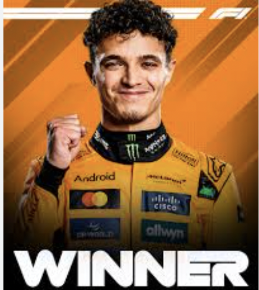

THE BASICSTeams: Currently 10 teams with 2 drivers each. Cars: Open-wheel, open-cockpit hybrid-powered race cars that can go over 200 MPH. Races: About 20-24 races per season (called Grand Prix or GPs), held all around the world. |
THE CHAMPIONSHIPThere are two championships:
Points are awarded based on finishing position in each race. The driver and team with the most points at the end of the season win the titles. |
OTHER INFOQualifying: Held the day before the race to determine the starting grid order. Pit Stops: Teams change tires and make adjustments during the race—timing is crucial. Strategy: Tire choices, pit stop timing, and weather all affect race outcomes. |
Lando Norris won the 2025 Monaco Grand Prix, leading from start to finish and closing the championship gap to teammate Oscar Piastri. Charles Leclerc finished second, with Piastri third. Max Verstappen and Lewis Hamilton rounded out the top five. Despite new rules aimed at heightening the action, overtaking remained rare. McLaren now leads the Constructors' standings heading into the Spanish Grand Prix.
